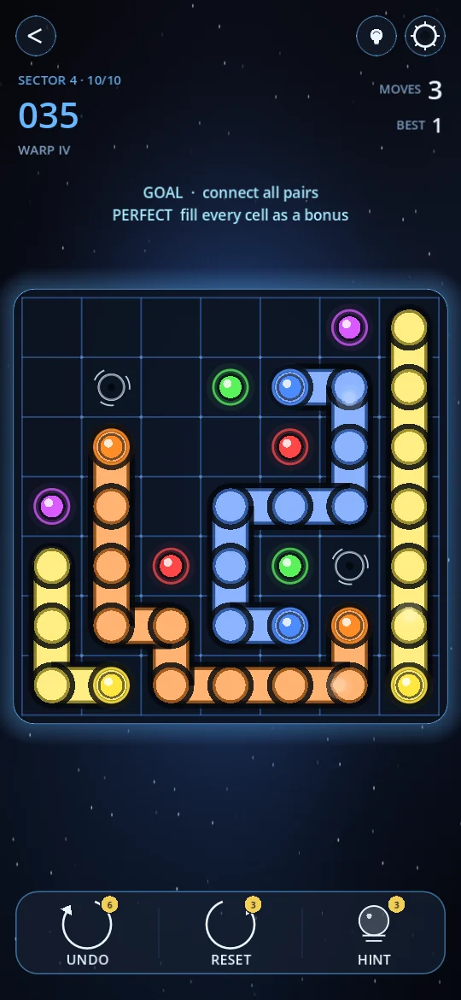

Portale brechen mit dem, was jedes Flow-Puzzle für selbstverständlich hält: dass eine Linie von Feld zu Feld kriechen muss. Zwei verbundene Ringe machen zwei weit entfernte Felder zu Nachbarn. Zeichne in einen hinein, mach am anderen weiter, und alles dazwischen bleibt frei.


Die Regel
Portale kommen in verbundenen Paaren. Erreicht deine Linie ein Portal, darf sie an seinem Zwilling weitergehen, als lägen die beiden Felder nebeneinander. Auf dem Handy geht das so: Zieh deine Linie aufs Portal, heb den Finger, tippe auf das verbundene Portal und zeichne von dort weiter.
Ein paar Details:
- Der Sprung verbindet nur die beiden Portalfelder. Die Felder dazwischen gehören nicht zur Linie, andere Farben können sie also nutzen.
- Ein Portalfeld ist auch ein normales Feld: Eine Linie kann darüber laufen, ohne zu springen.
- Im Paket Portale gehört jedes Portal zur Route einer Linie. Hat ein Level ein Portal, brauchst du es.
Sechs Tipps für Portal-Rätsel
1. Finde die Farbe, die zu Fuß nicht hinkommt
Suche ein Paar, dessen Punkte deutlich voneinander abgeschnitten sind, durch andere Punkte, Wände aus Linien oder den Rand. Diese Farbe braucht fast sicher das Portal.
2. Ein Portal ist eine Abkürzung, die das Feld teilt
Das Stück, das eine Linie überspringt, wird Platz für andere Farben. Schau vor dem Sprung, was der übersprungene Bereich braucht. Manchmal ist ein Sprung gerade deshalb richtig, weil eine andere Farbe die Felder braucht, die er frei lässt.
3. Prüfe die Landung
Schau dir vor dem Sprung an, was um das Ausgangsportal liegt. Ein Zwilling in einer engen Ecke lässt nur ein oder zwei Wege zum Weitergehen, und das entscheidet oft den Rest der Route.
4. Kammern können versteckte Türen haben
Eine Gruppe leerer Felder mit einer sichtbaren Öffnung kann normalerweise nicht von einer durchlaufenden Linie gefüllt werden. Mit einem Portal darin hat die Kammer eine zweite Tür, über den Zwilling. Zähle Portale als Öffnungen, wenn du Bereiche liest.
5. Zwei Portalpaare, zwei verschiedene Aufgaben
Auf Feldern mit zwei oder drei Portalpaaren dient jedes Paar meist einer anderen Farbe. Ordne Paare früh Farben zu; das grenzt die Möglichkeiten schnell ein.
6. Vergiss nicht das Darüberlaufen
Weil ein Portalfeld auch ein normales Feld ist, ist die springende Linie nicht die einzige Option dafür. In Füll-Leveln muss das Portalfeld selbst trotzdem von jemandem belegt werden.
Ein durchgerechnetes Beispiel
Angenommen, ein roter Punkt liegt oben links und sein Partner unten rechts, mit einer Wand aus anderen Farben quer durch die Mitte. Außen herum geht nicht. Jetzt siehst du einen Portalring zwei Felder vom roten Punkt entfernt und seinen Zwilling nahe der Ecke unten rechts. Der Plan schreibt sich von selbst: Rot läuft von seinem Punkt zum nahen Ring, springt und beendet die Linie vom Zwilling zum Partner. Die Mitte bleibt frei für die anderen Farben, und das ist meist genau der Platz, den sie brauchen. Wirkt ein Level blockiert, such die Farbe, deren Punkte auf beiden Seiten der Blockade liegen, und dann das Portalpaar, das die Brücke schlägt.
Wo du Portalen begegnest
Das Paket Portale hat 100 Level auf Feldern von 6×6 bis 10×10. Es beginnt mit einem Portalpaar pro Level, bekommt ein zweites in Sektor 4 und ein drittes ab Sektor 8, und ab Sektor 5 muss jedes Feld gefüllt werden. Portale gibt es auch in der Kampagne.
Portale im Editor platzieren
Wähle im Rätsel-Editor das Werkzeug ◉ PORTAL, tippe auf ein leeres Feld und dann auf ein zweites leeres Feld für das andere Ende. Der Editor verbindet sie sofort. Größere Raster erlauben mehr Portalpaare. Die komplette Anleitung steht unter eigenes Flow-Puzzle erstellen. Schick den Code an Freunde: Sie können ihn im Browser spielen, Portale inklusive.
Spiele Circuit Trace kostenlos auf Google Play: 100 Portal-Level und 600 weitere Flow-Puzzles.
Häufige Fragen
Wie benutze ich ein Portal in Circuit Trace?
Zieh deine Linie auf ein Portal, heb den Finger, tippe auf das verbundene Portal und zeichne von dort weiter.
Gehören die Felder zwischen zwei Portalen zur Linie?
Nein. Nur die beiden Portalfelder sind verbunden. Die Felder dazwischen bleiben frei für andere Farben.
Muss ich jedes Portal benutzen?
Im Paket Portale ja: Jedes Portal gehört zu einer Route. Bei Rätseln aus dem Editor hängt das vom Ersteller ab.